Kamisato Ayaka adalah karakter dari game Genshin Impact. Ayaka merupakan karakter berelemen cryo dari region Inazuma.
Ayaka merupakan karakter cryo DPS bintang 5 yang menggunakan pedang sebagai senjatanya. Pengisi suara Ayaka adalah Erica Mendez
untuk bahasa inggris dan Saori Hayami untuk suara jepangnya.
Skill-Skill Ayaka
Kamisato Art : Hyouka
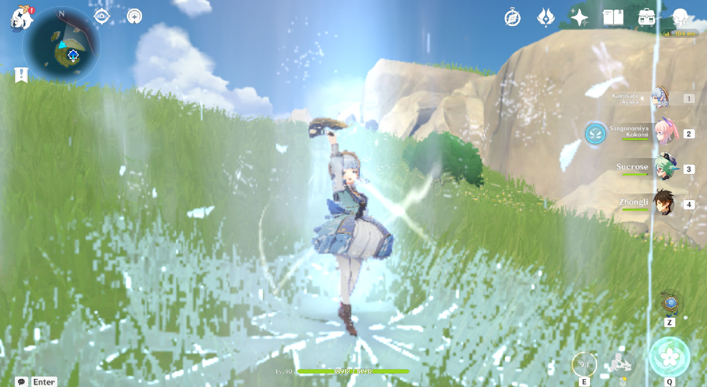
Ayaka akan mengeluaran aura es yang akan menyerang musuh disekitarnya yang akan menimbulkan
cryo damage.
Kamisato Art : Senho
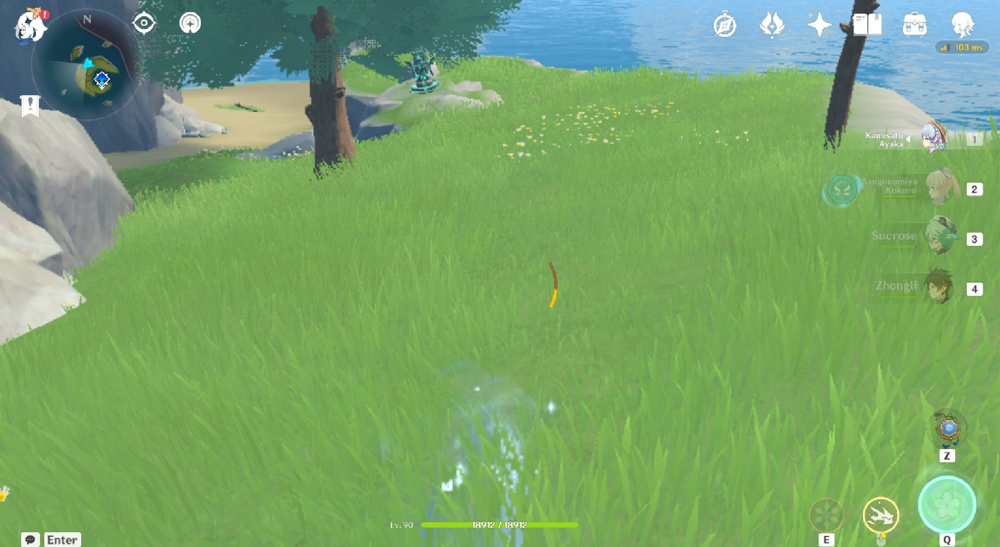
Ayaka akan berubah menjadi embun es selama melakukan dash yang akan memberi aura cryo pada
musuh yang mendekatinya.
Kamisato Art : Soumetsu
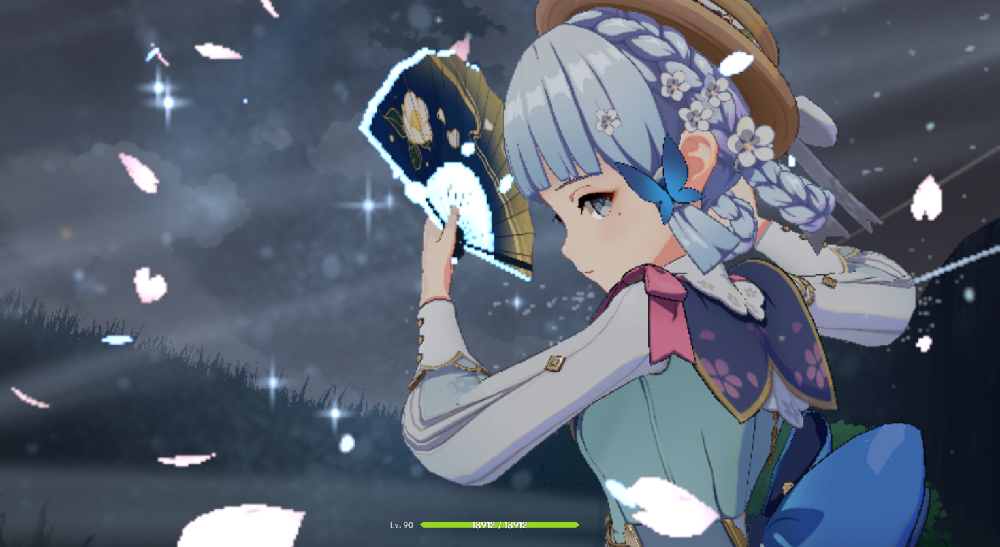
Ayaka akan menciptakan badai es yang akan memberi damage secara terus menerus.
Pasif Ayaka
Kanten Senmyou Blessing
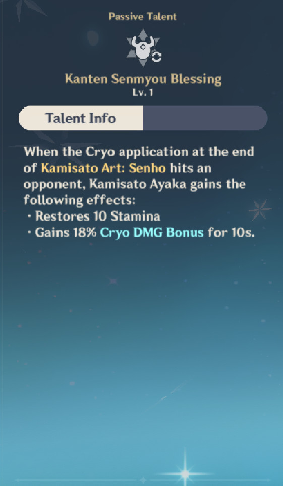
Saat musuh terkena aura cryo dengan Kamisato Art : Senho milik Ayaka,
Ayaka akan memperoleh 10 stamina dan bonus damage untuk elemen cryo sebesar 18% selama 10 detik.
Amatsumi Kunitsumi Sanctification
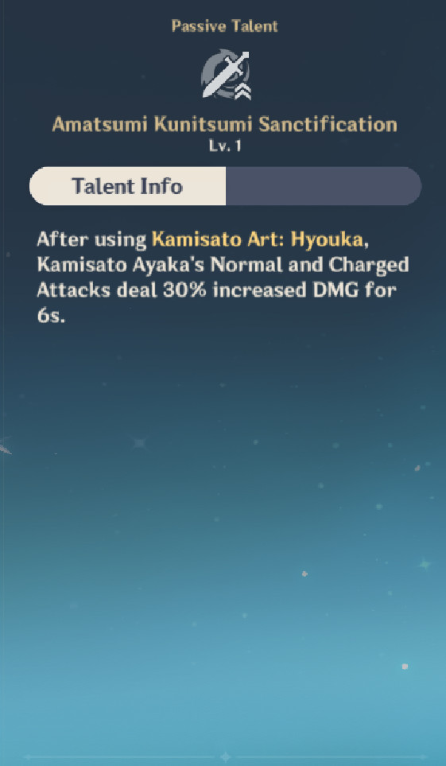
Setelah menggunakan Kamisato Art : Hyouka, Ayaka akan memperoleh
buff untuk normal attack dan charged attack sebesar 30% selama 10 detik.
Fruit of Shinsa
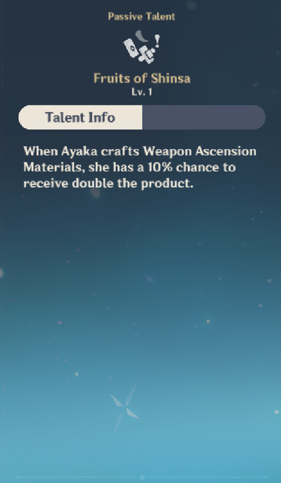
Jika ayaka digunakan untuk craft material ascension senjata,
ada 10% kemungkinan menggandakan material itu.
Senjata Terbaik Ayaka
Berikut adalah senjata yang direkomendasikan untuk Ayaka:
Mistplitter Reforged
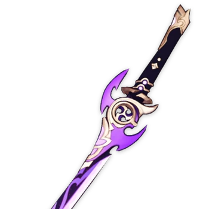
Merupakan senjata terbaik alias Signature-nya Ayaka.
Memiliki base Attack yang besar serta sub stat crit damage membuat serangan yang ditimbulkan Ayaka menjadi lebih besar.
Skyward Blade
Salah satu senjata yang cukup direkomendasikan karena memiliki
base attack yang lumayan besar dan sub stat energy recharge sehingga membuat Ayaka lebih sering mengeluarkan burstnya.
Blackcliff Longsword
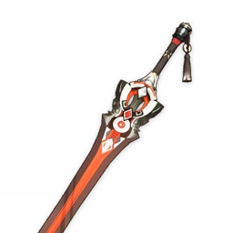
Merupakan salah satu opsi senjata bintang 4 terbaik dikarenakan
memiliki base attack yang terbilang tinggi dan sub stat berupa crit damage.
the Black Sword
Merupakan senjata battle pass alias berbayar dengan base attack
lebih kecil dari blackcliff longsword dan sub stat berupa crit rate. Memiliki pasif meningkatkan damage normal dan charged attack,
senjata ini lebih direkomendasikan untuk bermain di teamcomp selain freeze.
Amenoma Kageuchi
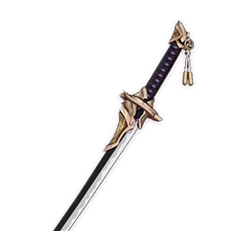
Merupakan pilihan F2P terbaik untuk Ayaka dikarenakan bisa didapatkan
melalui proses craft. Memiliki base atk yang tidak terlalu besar namun sub statnya berupa atk% sehingga dapat mengangkat stat attack Ayaka.
Memiliki pasif merestorasi energi setiap pemakaian elemental skill dan dapat di stack sampai 3 kali membuat Ayaka tidak mengalami kesulitan
dalam mengisi burstnya.
Kagotsurube Isshin
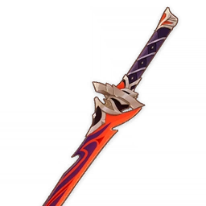
Senjata yang diberikan gratis bila sudah menyelesaikan story quest Kazuha.
Memiliki base attack lebih besar dari amenoma dan sub stat yang sama. Memiliki pasif meningkatkan attack dan memberi damage tambahan kepada musuh
bila terkena normal, charged, plunging attack.
Cold Steel
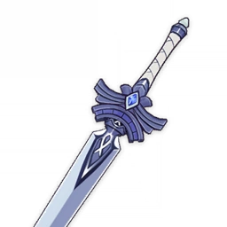
Salah satu opsi senjata bintang 3 terbaik. Memiliki base attack yang cukup kecil
karena terbatas dengan raritynya dan sub stat atk%. Memiliki pasif meningkatkan damage kepada musuh yang terkena aura cryo. Senjata ini direkomendasikan
untuk awal awal bermain Ayaka bahkan sampai endgame pun tetap berguna.
Harbinger of Dawn
Memiliki base atk yang sama seperti cold steel dan sub stat berupa crit damage. Pasif
senjata ini cukup berguna karena dapat meningkatkan crit rate bila HP berada diatas 90%.
Atrifact Terbaik Ayaka
Ayaka termasuk karakter yang cukup leluasa untuk di build, berikut beberapa kombinasi artifact yang bisa digunakan:
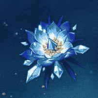
4 Set Blizzard Strayer
Saat ini artifact terbaik untuk Ayaka adalah full set blizzard strayer karna 2 setnya memberi efek bonus untuk damage cryo sebesar 15%
dan 4 setnya memberi 20% crit rate untuk musuh yang terkena aura cryo dan tambahan 20% lagi jika musuh terkena efek freeze.
Satu-satunya kekurangan artifact ini adalah keterbatasan teamcomp yaitu hanya bisa digunakan ketika bermain di team freeze dan kurang efektif
bila digunakan untuk melawan musuh yang immune status freeze.
+ 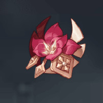 / 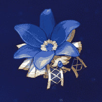 / 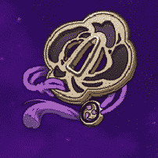
2 Set Blizzard Strayer + 2 Set Gladiator / Nobless Oblige / Emblem of Severed Fate
Artifact ini merupakan opsi selingan untuk Ayaka bila belum mendapatkan fullset Blizzard Strayer. Opsi artifact ini juga cocok digunakan
untuk bermain Ayaka di teamcomp melt dan lain-lain. 2 set Gladiator akan memberi 18% attack, 2 set Nobless akan memberi 20% elemental burst damage,
dan 2 set Emblem akan memberi 20% energy recharge.
4 Set Emblem of Severed Fate
Artifact set ini merupakan salah satu pilihan untuk Ayaka yang hanya bermain elemental burstnya saja. 2 setnya akan memberi 20% energy recharge yang
akan membantu Ayaka dalam mengisi burstnya, dan 4 setnya akan memberi bonus burst damage sebesar 25% dari total energy recharge milik pengguna artifact.
Artifact ini direkomendasikan untuk bermain tim quickswap Ayato freeze atau quickswap reverse melt.
Team Comp Terbaik Ayaka
Team Comp Freeze
Teamcomp Freeze merupakan tim terbaik untuk Ayaka saat ini. berisi 2 cryo, 1 hydro, dan 1 anemo.
Tim ini cocok digunakan untuk melawan musuh musuh yang banyak dan bisa di freeze. Dengan adanya 2 cryo,
burst Ayaka akan lebih cepat terisi. Untuk stat rekomendasi tim ini untuk Ayaka yaitu 35 : 180(crit rate : crit damage),
stat rekomendasi belum termasuk dengan sub stat dari weapon.
Contoh Team Comp Freeze:
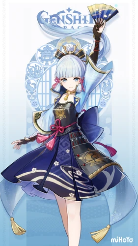
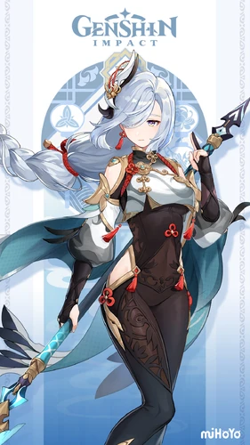
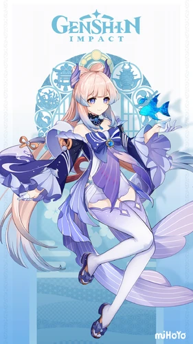
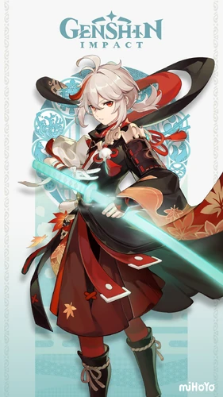
Team Comp Melt
Teamcomp Melt merupakan alternatif tim bila berhadapan dengan musuh yang immune freeze seperti boss enemy. Tim ini memerlukan Bennett dan Xiangling
sebagai buffer dan pyro sub dps. Stat rekomdasi tim ini yaitu 60 : 150 dengan energy recharge 120% bila menggunakan senjata selain amenoma dan skyward blade.
Contoh Team Comp Melt:
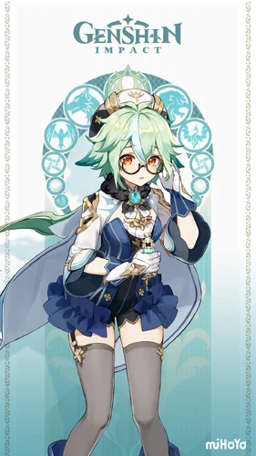
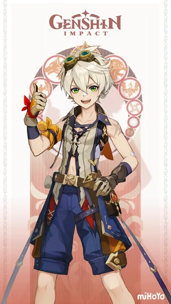
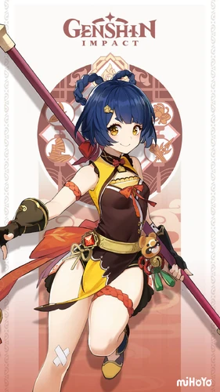
Team Comp QuickSwap Freeze
Teamcomp ini menjadikan Ayaka sebagai sub dps melalui burstnya dengan menggunakan 4 set artifact emblem. Mirip seperti teamcomp freeze sebelumnya
namun yang menjadi dps utama berupa karakter lain seperti Ayato ataupun Childe. Stat rekomendasi team ini yaitu 60 : 120 dengan energy recharged diatas 200%.
Contoh Team Comp QuickSwap Freeze:
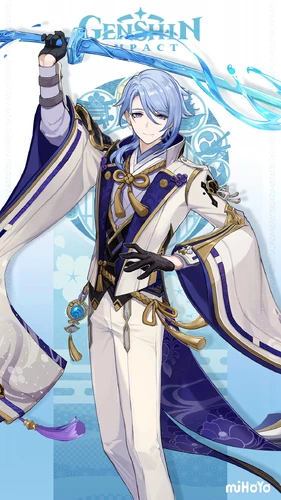
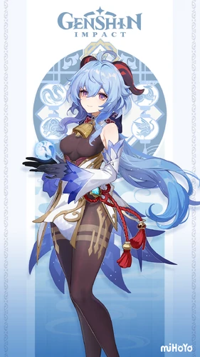
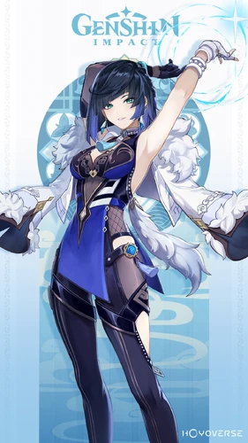
Build Ayaka
Berikut merupakan buildku untuk Ayaka:
Penutup
Ayaka merupakan cryo dps yang cukup overpower terutama pada bagian burstnya. Ayaka juga cukup F2P friendly karena peformanya tidak dibatasi oleh konstilasinya.
Untuk build Ayaka juga cukup mudah dengan banyak pilihan weapon dan artifact
yang dapat digunakan. Selain itu Ayaka juga cukup fleksibel dan bisa dipakai di berbagai tim.